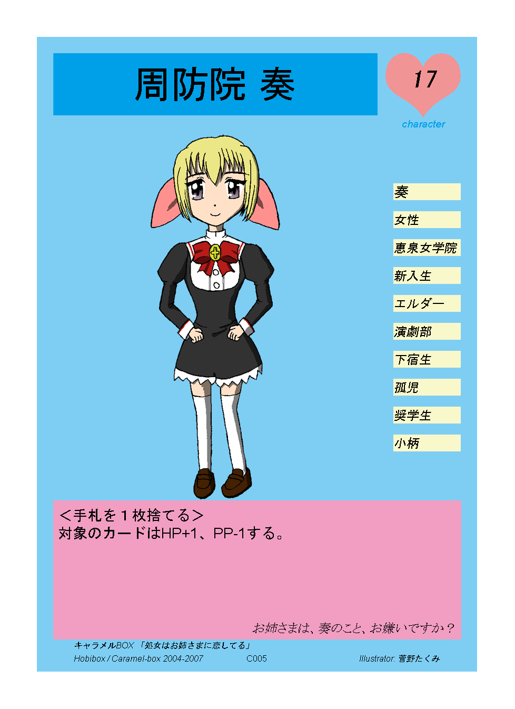
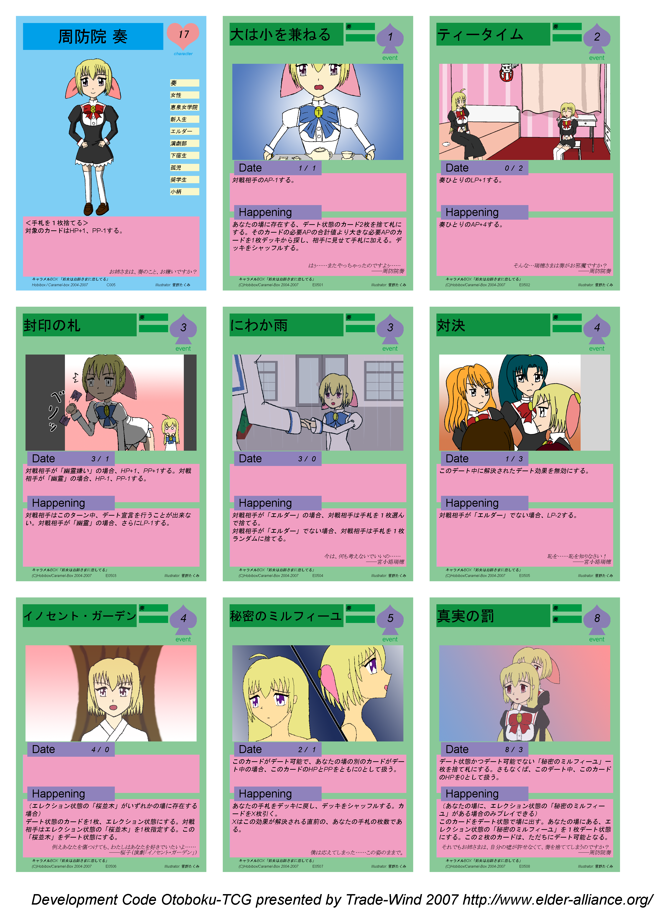

elder-alliance.org > Trade-Wind式 オリジナルTCG開発環境 > 利用ガイドライン > 例題：おとボクTCGプロジェクト
東京に存在する由緒正しき女子校、恵泉女学院には、「エルダー」と呼ばれる制度がある。 エルダーとはエルダーシスターの略、すなわち、最も「お姉さまらしい」生徒に贈られる称号である。 お姉さまらしさ、との観点から、毎年最上級生からエルダーが選出されることが通例となっており、エルダーとして選ばれた生徒 は、卒業まで全ての生徒から「お姉さま」と慕われ、数々のイベントの主賓として、その名声と気品を生徒に 示し続ける。
今年、この制度に、小さな異変が起きた。
転校して来て数週間という短い期間の中で圧倒的多数の生徒の信任を得て選ばれた、 今年度のエルダー・宮小路瑞穂には、その可憐な容姿にも関わらず男性である、という大きな秘密があった。
その正体を知る生徒、そして知らない生徒。
瑞穂は女性として、そして男性として完璧以上の人間であることから、瑞穂の傍にいて、 あわよくば瑞穂の心を射止めようとする人間は数多い。
――瑞穂の心を射止めようとする人間。あなたも、その一人である。
目次
現在整備中です。 2007年冬コミまでに出せたらと考えています。
なお、現在おとボクのイラストを書いていただける方を募集中です。
以下のレイアウトを持つカードをレイアウトします。

キャラクターカード 周防院奏
キャラクターカード・テンプレートファイルの形式は、以下のようになります。
"Alias","x","y","width","height","Type","Data","Text Align(Text)","Vertical Align(Text)","Font Face(Text)","Font Style(Text)","Font Size(Text)","Font Color - R(Text)","Font Color - G(Text)","Font Color - B(Text)" "背景色",0,0,978,1346,"Base","base.png" "カードテンプレート",70,70,836,1205,"Image","character-template.png" "カード番号",100,1240,776,264,"Text","カード番号","Center",,"Monospace","Plane",16,0,0,0 "出典",140,1215,512,24,"Text","出典",,,"Default Serif","Italic",16,0,0,0 "コピーライト",140,1240,300,24,"Text","著作権表示",,,"Default Serif","Italic",16,0,0,0 "イラストレーター",600,1240,235,24,"Text","イラスト","Right",,"Default Serif","Italic",16,0,0,0 "キャラクター名ウィンドウ",100,100,507,119,"Image","character-name-window.png" "キャラクター名",110,110,487,99,"Text","CharacterName","Center","Center","ＭＳ Ｐゴシック","Regular",72,0,0,0 "キャラクターイラスト",100,248,617,702,"Image","character-illust-space.png" "目標LPウィンドウ",732,100,143,123,"Image","character-lovepower-window.png" "目標LP",732,126,143,108,"Text",17,"Center",,"ＭＳ Ｐゴシック","Italic",48,0,0,0 "キャラクターカード種別表示",732,223,143,24,"Text","character","Center",,"Default Sans Serif","Italic",24,0,160,233 "属性ウィンドウ",747,348,128,32,"Image","character-property-window.png" "属性0",747,348,128,32,"Text","p0",,"Center","ＭＳ ゴシック","Italic",28,0,0,0 "属性ウィンドウ",747,401,128,32,"Image","character-property-window.png" "属性1",747,401,128,32,"Text","p1",,"Center","ＭＳ ゴシック","Italic",24,0,0,0 "属性ウィンドウ",747,454,128,32,"Image","character-property-window.png" "属性2",747,454,128,32,"Text","p2",,"Center","ＭＳ ゴシック","Italic",24,0,0,0 "属性ウィンドウ",747,507,128,32,"Image","character-property-window.png" "属性3",747,507,128,32,"Text","p3",,"Center","ＭＳ ゴシック","Italic",24,0,0,0 "属性ウィンドウ",747,560,128,32,"Image","character-property-window.png" "属性4",747,560,128,32,"Text","p4",,"Center","ＭＳ ゴシック","Italic",24,0,0,0 "属性ウィンドウ",747,613,128,32,"Image","character-property-window.png" "属性5",747,613,128,32,"Text","p5",,"Center","ＭＳ ゴシック","Italic",24,0,0,0 "属性ウィンドウ",747,666,128,32,"Image","character-property-window.png" "属性6",747,666,128,32,"Text","p6",,"Center","ＭＳ ゴシック","Italic",24,0,0,0 "属性ウィンドウ",747,719,128,32,"Image","character-property-window.png" "属性7",747,719,128,32,"Text","p7",,"Center","ＭＳ ゴシック","Italic",24,0,0,0 "属性ウィンドウ",747,772,128,32,"Image","character-property-window.png" "属性8",747,772,128,32,"Text","p8",,"Center","ＭＳ ゴシック","Italic",24,0,0,0 "属性ウィンドウ",747,825,128,32,"Image","character-property-window.png" "属性9",747,825,128,32,"Text","p9",,"Center","ＭＳ ゴシック","Italic",24,0,0,0 "特殊能力ウィンドウ",100,950,776,264,"Image","character-ability-window.png" "特殊能力",110,960,756,244,"Text","nouryoku",,,"Default Sans Serif","Regular",28,0,0,0 "フレーバーテキスト",110,960,756,244,"Text","text","Right","Bottom","ＭＳ Ｐ明朝","Italic",24,0,0,0
キャラクターカード・リストファイルの形式は、以下のようになります。
"カード番号","キャラクター名","目標LP","属性0","属性1","属性2","属性3","属性4","属性5","属性6","属性7","属性8","属性9","特殊能力","フレーバーテキスト","出典","コピーライト","イラストレーター","キャラクターイラスト" "C005","周防院 奏",17,"奏","女性","恵泉女学院","新入生","エルダー","演劇部","下宿生","孤児","奨学生","小柄","＜手札を１枚捨てる＞<br>対象のカードはHP+1、PP-1する。","お姉さまは、奏のこと、お嫌いですか？","キャラメルBOX 「処女はお姉さまに恋してる」","Hobibox / Caramel-box 2004-2007","Illustrator:菅野たくみ","char-image/kana.png"
以下のレイアウトを持つカードをレイアウトします。

イベントカード 真実の罰
イベントカード・テンプレートファイルの形式は、以下のようになります。
"Alias","x","y","width","height","Type","Data","Text Align(Text)","Vertical Align(Text)","Font Face(Text)","Font Style(Text)","Font Size(Text)","Font Color - R(Text)","Font Color - G(Text)","Font Color - B(Text)" "背景色",0,0,978,1346,"Base","base.png" "カードテンプレート",70,70,836,1205,"Image","event-template.png" "カード番号",100,1240,776,264,"Text","カード番号","Center",,"Monospace","Plane",16,0,0,0 "出典",140,1215,512,24,"Text","出典",,,"Default Serif","Italic",16,0,0,0 "コピーライト",140,1240,300,24,"Text","著作権表示",,,"Default Serif","Italic",16,0,0,0 "イラストレーター",600,1240,275,24,"Text","イラスト","Right",,"Default Serif","Italic",16,0,0,0 "イベント名ウィンドウ",100,100,500,100,"Image","event-name-window.png" "イベント名",100,100,500,100,"Text","イベント名",,"Center","Default Sans Serif","Regular",64,0,0,0 "条件ウィンドウ",610,100,128,32,"Image","event-property-window.png" "条件1",610,100,128,32,"Text","条件１",,"Center","Default Sans Serif","Italic",24,0,0,0 "条件ウィンドウ",610,150,128,32,"Image","event-property-window.png" "条件2",610,150,128,32,"Text","条件２",,"Center","Default Sans Serif","Italic",24,0,0,0 "必要APウィンドウ",745,100,119,135,"Image","event-again-window.png" "必要AP",745,130,119,135,"Text","AP","Center",,"Default Sans Serif","Italic",48,0,0,0 "イベントカード種別表示",745,235,119,135,"Text","event","Center",,"Default Serif","Regular",28,0,153,68 "イラストファイル",112,280,751,422,"Image","event-illust-space.png" "デート効果ウィンドウ",100,760,776,168,"Image","event-ability-date-window.png" "デート効果",110,772,756,168,"Text","p4",,,"Default Sans Serif","Italic",28,0,0,0 "デート能力ウィンドウ",120,705,384,64,"Image","event-status-date-window.png" "デート能力種別表示",140,705,200,64,"Text","Date",,,"Default Serif","Regular",48,0,0,0 "HP",400,710,0,54,"Text","p2",,"Center","Default Sans Serif","Italic",32,0,0,0 "/",430,710,0,54,"Text","/","Center","Center","Default Sans Serif","Italic",32,0,0,0 "PP",460,710,0,54,"Text","p3",,"Center","Default Sans Serif","Italic",32,0,0,0 "ハプニング効果ウィンドウ",100,955,776,256,"Image","event-ability-happening-window.png" "ハプニングメッセージウィンドウ",120,900,384,64,"Image","event-status-happening-window.png" "ハプニング能力種別表示",140,900,384,64,"Text","Happening",,,"Default Serif","Regular",48,0,0,0 "ハプニング効果",110,967,756,234,"Text","p5",,,"Default Sans Serif","Italic",28,0,0,0 "フレーバーテキスト",110,967,756,234,"Text","text","Right","Bottom","ＭＳ Ｐ明朝","Italic",24,0,0,0
イベントカード・リストファイルの形式は、以下のようになります。
"カード番号","イベント名","条件1","条件2","必要AP","HP","PP","デート効果","ハプニング効果","フレーバーテキスト","出典","コピーライト","イラストレーター","イラストファイル" "E0501","大は小を兼ねる","奏",,1,1,1,"対戦相手のAP-1する。","あなたの場に存在する、デート状態のカード2枚を捨て札にする。そのカードの必要APの合計値より大きな必要APのカードを1枚デッキから探し、相手に見せて手札に加える。デッキをシャッフルする。","はぅ……またやっちゃったのですよぅ…… <br>――周防院奏","キャラメルBOX「処女はお姉さまに恋してる」","(C)Hobibox/Caramel-Box 2004-2007","Illustrator:","event-image/kana001.png" "E0502","ティータイム","奏",,2,0,2,"奏ひとりのLP+1する。","奏ひとりのAP+4する。","そんな…瑞穂さまは奏がお邪魔ですか？ <br>――周防院奏","キャラメルBOX「処女はお姉さまに恋してる」","(C)Hobibox/Caramel-Box 2004-2007","Illustrator:","event-image/kana002.png" "E0503","封印の札","奏",,3,3,1,"対戦相手が「幽霊嫌い」の場合、HP+1、PP+1する。対戦相手が「幽霊」の場合、HP-1、PP-1する。","対戦相手はこのターン中、デート宣言を行うことが出来ない。対戦相手が「幽霊」の場合、さらにLP-1する。",,"キャラメルBOX「処女はお姉さまに恋してる」","(C)Hobibox/Caramel-Box 2004-2007","Illustrator:","event-image/kana003.png" "E0504","にわか雨","奏",,3,3,0,,"対戦相手が「エルダー」の場合、対戦相手は手札を１枚選んで捨てる。<br>対戦相手が「エルダー」でない場合、対戦相手は手札を１枚ランダムに捨てる。","今は、何も考えないでいいの…… <br>――宮小路瑞穂","キャラメルBOX「処女はお姉さまに恋してる」","(C)Hobibox/Caramel-Box 2004-2007","Illustrator:","event-image/kana004.png" "E0505","対決","奏",,4,1,3,"このデート中に解決されたデート効果を無効にする。","対戦相手が「エルダー」でない場合、LP-2する。","恥を……恥を知りなさい！ <br>――宮小路瑞穂","キャラメルBOX「処女はお姉さまに恋してる」","(C)Hobibox/Caramel-Box 2004-2007","Illustrator:","event-image/kana005.png" "E0506","イノセント・ガーデン","奏",,4,4,0,,"（エレクション状態の「桜並木」がいずれかの場に存在する場合）<br>デート状態のカードを1枚、エレクション状態にする。対戦相手はエレクション状態の「桜並木」を1枚指定する。この「桜並木」をデート状態にする。","例えあなたを傷つけても、わたしはあなたを好きでいたいよ…… <br>――桜子（演劇「イノセント・ガーデン」）","キャラメルBOX「処女はお姉さまに恋してる」","(C)Hobibox/Caramel-Box 2004-2007","Illustrator:","event-image/kana006.png" "E0507","秘密のミルフィーユ","奏",,5,2,1,"このカードがデート可能で、あなたの場の別のカードがデート中の場合、このカードのHPとPPをともに0として扱う。","あなたの手札をデッキに戻し、デッキをシャッフルする。カードをX枚引く。<br>Xはこの効果が解決される直前の、あなたの手札の枚数である。","僕は応えてしまった……この姿のままで。","キャラメルBOX「処女はお姉さまに恋してる」","(C)Hobibox/Caramel-Box 2004-2007","Illustrator:","event-image/kana007.png" "E0508","真実の罰","奏","奏",8,8,3,"デート状態かつデート可能でない「秘密のミルフィーユ」一枚を捨て札にする。さもなくば、このデート中、このカードのHPを0として扱う。","（あなたの場に、エレクション状態の「秘密のミルフィーユ」がある場合のみプレイできる）<br>このカードをデート状態で場に出す。あなたの場にある、エレクション状態の「秘密のミルフィーユ」を１枚デート状態にする。この２枚のカードは、ただちにデート可能となる。","それでもお姉さまは、自分の嘘が許せなくて、奏を捨ててしまうのですか？ <br>――周防院奏","キャラメルBOX「処女はお姉さまに恋してる」","(C)Hobibox/Caramel-Box 2004-2007","Illustrator:","event-image/kana008.png"
以下のレイアウトにて、印刷イメージを作成します。

印刷シート 奏ちゃんセット
印刷シート・テンプレートファイルの形式は、以下のようになります。
"Alias","x","y","width","height","Type","Data","Text Align(Text)","Vertical Align(Text)","Font Face(Text)","Font Style(Text)","Font Size(Text)","Font Color - R(Text)","Font Color - G(Text)","Font Color - B(Text)" "台紙",0,0,2880,3985,"Base","sheet-base.png" "カード左上",0,0,978,1346,"Image","char-0.png" "カード中上",908,0,978,1346,"Image","event-0.png" "カード右上",1816,0,978,1346,"Image","event-1.png" "カード左中",0,1276,978,1346,"Image","event-2.png" "カード中央",908,1276,978,1346,"Image","event-3.png" "カード右中",1816,1276,978,1346,"Image","event-4.png" "カード左下",0,2552,978,1346,"Image","event-5.png" "カード中下",908,2552,978,1346,"Image","event-6.png" "カード右下",1816,2552,978,1346,"Image","event-7.png" "ロゴ",0,3898,2880,87,"Text","Development Code Otoboku-TCG presented by Trade-Wind 2007 http://www.elder-alliance.org/ ","Right","Bottom","Book Antiqua","Italic","64",0,0,0
印刷シート・リストファイルの形式は、以下のようになります。
"カード左上","カード中上","カード右上","カード左中","カード中央","カード右中","カード左下","カード中下","カード右下" "card/char-0.png","card/event-0.png","card/event-1.png","card/event-2.png","card/event-3.png","card/event-4.png","card/event-5.png","card/event-6.png","card/event-7.png"
この例題は、
ゲーム「
なお、該当作品の二次創作に対する原作側のガイドラインとして、 キャラメルBOX二次創作ガイド が規定されております。
{kind=link}
{kind=link}